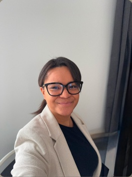

Mette
Holmström
Olen Mette, tietojenkäsittelyn ja digitaalisten palveluiden kehittämisen opiskelija Laurea-ammattikorkeakoulussa.
Minua kiinnostaa, miten digitaalisista palveluista tehdään selkeitä, toimivia ja visuaalisesti miellyttäviä. Vahvuuksiani ovat luova ajattelu, ongelmanratkaisu ja asioiden tarkastelu käyttäjän näkökulmasta.
Tässä portfoliossa esittelen kouluprojektejani sekä kokemustani digitaalisten alustojen ylläpidosta ja kehittämisestä.
